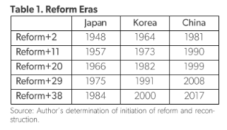
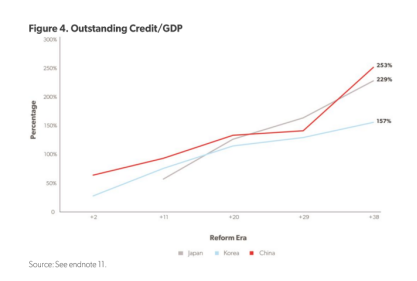
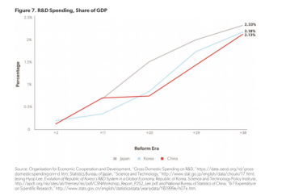
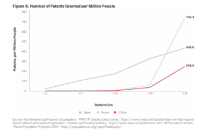

收录于合集

简 介
** 【作者】** Derek Scissors是美国企业研究所的常驻学者，主要研究方向为中美贸易。
** **【 编译 】****尚道国际资讯
** **【 来源 】****2019年8月26日 American Enterprise Institute
内容提要 **
**
作者认为，在国际经济中规模（Size）和繁荣（Prosperity）两者都很重要。
虽然中国拥有庞大的规模，但中国是一个繁荣的国家吗？中国能否繁荣呢？作者利用三种方法回答这一问题：第一，评估中国的基本方面；第二，从统计数据中找出可信的数据；第三，与历史上处于同一发展阶段的国家比较分析。作者选择了日韩两国作为与中国进行比较的对象。日韩在战后经济的迅速扩张，并且从不同的时期开始，这三个国家在一代人的时间里显著改善了人民的生活。1946年日本开始重建，1962年韩国开始改革，1979年中国开始改革。作者用“改革+2年”和“改革+38年”分别作为开始和结束的时间点进行比较，并重点标出年份+11、+20和+29。为了便于参考，表1显示了每个国家的年份。作者认为，与日韩在历史上的一系列指标比较显示，中国的奇迹已经过早地消退，让这个国家不能变得富裕。

文章导读
**1
**
个人收入
Persona1 Income
作者将个人收入作为发展成功的基准。而衡量成功的指标有：农业、劳动力资本和创新的直接或间接生产率。由于存在价格差异，个人收入很难衡量，也很难在不同的经济体和时间之间进行恰当的比较。但它的巨大优势在于，它代表的是真正的发展成功。本币增长结果更能说明一个重要水平，那就是美元汇率的变化。当地货币（Local Curreny）忽略了偶尔的大幅贬值和渐进的升值。在改革的最后阶段之前，韩国一直远超中国。这反映出，中国政府将家庭收入通过非商业银行体系转移至国有企业。即使中国在最后阶段增长的更快，以美元计算的收入水平也不到韩国的一半（按改革+38计算）。以美元计算，中国的经济增速落后于日本，收入水平比日本低三分之一，甚至忽略了随后33年的通货膨胀。由于私营企业担心被国家没收，中国国民收入可能被低估。否则，中国在个人收入方面相对较弱的表现可能会让人感到意外，它被对GDP的盲目崇拜所掩盖。中国在改革的最后阶段表现优异，如果中国能够维持最近的趋势，它就能缩小收入差距，然而，来自其他指标的综合证据表明，这是极不可能的。
**
**
**2
**
农业产生力
Agricul ture Productivity
农业生产力是发展的基石。它既与当时大部分人口的收入水平有关，也与国家劳动力市场的发展有关。随着生产力的提高，进城务工的农民工增多。在经济发展的早期和中期，土地和劳动力是经济增长的主要贡献者，然后让位于资本和创新。
衡量农业生产力的一个关键指标是谷物产量。中国农业生产力不理想，尽管又经历了17年的技术发展，但产量都不如韩国农业。尽管如此，收益率基本上与日本改革+38相当，而且增长更快。问题在于将边际生产率从产量转化为收入，努力实现繁荣的国家负担不起仍然拥有大量低生产率的农村人口。在改革+38时，由于日本农民在1984年就拥有了自己的土地（而中国农民在2017年都无法拥有），日本农村居民的名义收入是中国农村居民的两倍多。与此相关的一个因素是，中国农村地区约有一半的收入来自农业，而日本农村地区的收入不到五分之一（尽管数据可能无法比较）。
**3
**
劳动生产力
Labor Productivity
从数量上看，中国崛起最突出的因素是成功地利用了其庞大的劳动力。相比之下，劳动力老龄化是提高收入的一个巨大障碍。老龄化严重影响了日本的经济增长，韩国紧随其后。在劳动力数量骤降导致收入增长停滞之前，中国还有十多年的时间，但它还面临着日本和韩国没有遇到的其他严重问题。在改革进程开始时，中国劳动力的年龄比韩国大。而在发展中，中国劳动力的年龄明显超过了日本。中国改革+38时人口年龄是日本在+44（韩国+47）时的人口年龄。另外，根据联合国的预测显示，到2035年，中国的老龄化速度将会加快。从发展的角度看，中国的人口年龄比日本和韩国还要大，而且老龄化速度还将加快。
衡量劳动质量的另一个辅助指标是平均寿命（life expectancy）。中国在改革初期的平均寿命远高于日本或韩国。这意味着，在改革前提高平均寿命的同时，也错过了实现收入增长的大好机会。改革后，中国的收入表现相对较弱，而平均寿命的提高恰好符合这一点。中国在改革+38的平均寿命进一步表明，经济快速增长的时代即将结束。
从教育方面来看，教育对生产力至关重要，而中国的教育水平还不够高。中国在改革+38时的受教育程度大致相当于日本改革+2时的水平。韩国和中国同时起步，但随后的表现远胜于中国。
**4
**
资本回报率
Return on capital
衡量资本回报率最基本的方法是看需要多少钱才能实现增长。在整个改革过程中，国内资本市场比外国资本更为重要。在相当长的一段时间里，中国和日本一直是大型外部净债权国。韩国面临外债挑战，但这些挑战的范围和持续时间有限。国内信贷由公司股、政府股和家庭股组成。将这些因素与规模相结合，可以衡量宏观经济的资本回报率，即每单位经济增长发放了多少信贷。
在三个国家的改革期间，企业借贷占主导地位，政府和家庭信贷在改革接近尾声时出现增长。韩国每单位GDP的信贷的累积速度，要比中国从改革+2到改革+29的累积速度快得多。随着中国借款规模的螺旋式上升，结果发生了剧烈变化。自改革以来，韩国的这一数字已大幅上升，但仍未达到中国的水平。中国的情况可能比日本要好。尽管起点尚不清楚，但两者在改革+20上基本相当。日本的信贷状况在改革+29时的恶化程度超过了中国，单独来看，日本的信贷状况在改革+38时看起来相当糟糕。尽管如此，中国2008年至2017年隐含资本回报率的恶化，远比日本1975年至1984年的情况糟糕。

**5
**
创新
土地、劳动力和资本的疲软预示着中期的经济停滞，这一迟来的认识已经让中国政府和支持其经济模式的外国人士将创新当作救星。而创新的确可以提高同样数量的土地、劳动力和资本的生产效率。
研究与开发(R&D)支出是衡量国家创新的一个重要指标。在发展过程中，日本和韩国的表现似乎都超过了中国。日本的研发份额自1984年以来一直在上升，韩国的份额自2000年以来一直在上升，中国在2000年也不断增加科研支出。而中国作为一个更大的经济体和人口更多的国家需要更多的专利来推动经济发展。未来几年可能会有更多的中国专利，尽管不足以引领一个大型经济体，也会对全球创新产生重大影响。


**6
**
结 论
在相当长的一段时间内，中国都未能将收入提高到日韩的水平。此外，预测中国经济增长的人士表示，中国面临的挑战与日韩相同，甚至未来增长空间可能会更加有限。
由于在土地所有权和农村教育方面的政策选择不当，农村居民收入仍然低得让人难以想象，（从人口统计上）中国很快就会进入老龄化社会。中国陷入停滞的一个简单论点是，在改革前，在没有提高收入的情况下，中国提高了平均寿命，而在改革中，中国未能在严重老龄化之前提高教育水平。过去10年，中国并非有效地配置资本，以抵消人口迅速老龄化和教育水平低下的影响，而是在取得越来越少的收益的同时，逐步扩大信贷规模。因此，除非通过创新大幅提高回报，否则劳动力和资本都无法大幅提高收入。中国的研发支出令人鼓舞，不过最近的增长必须保持下去，才能达到日本和韩国研发支出的后期阶段。专利方面的情况正在改善，但有所减弱。中国专利总量将影响全球创新。然而，成为一个以创新为主导的大型经济体是一个更大的挑战。
改革开放38年后，韩国取得了巨大的发展成就，同期的收入水平大约是中国的两倍。中国已经走了很长一段路。至于下一步，日本和韩国的经验表明，它正在落后。
本文不代表国政学人观点
往期阅读
【重磅速递】约瑟夫·奈：美国霸权的兴衰：从威尔逊到特朗普 | 国政学人
【重磅推荐】巴里·布赞：英国学派视角下的中国崛起 | 国政学人
【重磅速递】米尔斯海默：注定失败：自由主义国际秩序的兴衰 | 国政学人
【IPE重磅】罗伯特·基欧汉：国际政治经济学的新与旧 ｜国政学人
【区域重磅】阿米塔·阿查亚：重塑东南亚研究：自我怀疑、渴望和对比较的承诺 | 国政学人
【时评专栏】美智库：中国“一带一路”倡议为何能在意大利得到大力支持？